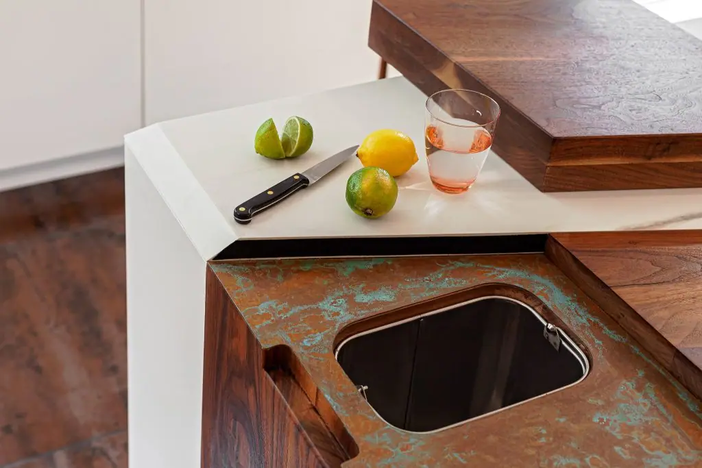
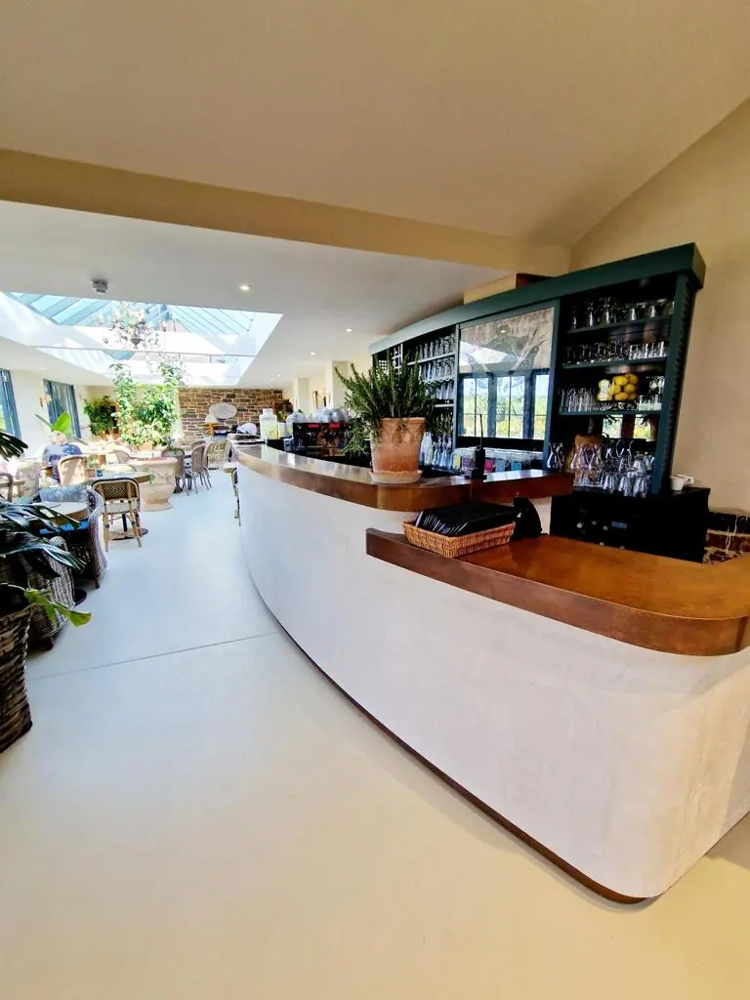

Handmade copper worktops are perfect for the home, commercial premises, bars, restaurants, show homes and anywhere that could benefit from the radiant warmth of aged copper.
All copper worktops supplied by Halman Thompson are hand made and crafted by experienced professionals. They can be supplied as sheets or as complete worktops as required.
Sheets can be cut to any size or shape and the colour and character of the copper can be adapted to your specific requirements.
Contact our team for a personalised copper worktop quotation.


Cut to size
Each of our bespoke finishes can be purchased in sheets cut to your size, perfect for your project.
- Pricing includes delivery and turnaround time is just 5-8 weeks
- Each piece is coated in a gloss finish lacquer that prevents the sheet from further aging
Ready to go
We can provide bespoke cut metal with each of our finishes being wrapped around wood and lacquer finished. Please get in touch for a bespoke quote . If you’re a business please use our Bespoke Quote for Businesses form .
Hand crafted copper worktops
Few metals have the depth of colour and warmth of copper. Whether you’re looking for natural copper , aged copper, verdigris or something else, there is a finish here that’s perfect for your needs.
We provide copper worktops in a range of finishes, including:
- Cheshire finish – Aged copper with a more natural look that reflects the core metal
- Hertfordshire finish – Rich verdigris finish with blues and darker swathes throughout
- Northumberland finish – A more subtle verdigris look with less pronounced character
- Oxfordshire finish – A more aged patina with more yellow finish than warm red
Each copper worktop can be designed and created to your specific requirements. Aged copper sheets can also be cut to almost any size or shape.
As we create every copper worktop to order, you can specify the colour, depth and tone of the metal.
If your project requires multiple copper sheets , we will age them together to create the closest possible match between them. A slight variation may be visible but we will do our best to minimise it.
INSTALLING BESPOKE COPPER WORKTOPS
We can provide your copper worktop as a copper sheet or as a fully finished worktop.
Copper sheets will need cutting and shaping to fit the installation and can then be fixed into place using adhesive or fixings.
We can also provide full worktops cut and shaped to your exact requirements.
CARING FOR YOUR COPPER WORKTOP
Copper is a lovely metal with a character few other materials can match. It’s also a soft metal and prone to staining and damage. That’s why we protect all copper worktops with a tough lacquer.
That lacquer protects the worktop but also stops the ageing process. Keeping the lacquer in good condition is paramount. Therefore, we recommend only using warm soapy water and a soft cloth to clean it.
Avoid using abrasives or chemical cleaners to protect the colour and character of the copper.
We provide a full installation and metal care guide with every copper worktop we sell.
Contact the team here at Halman Thompson for a personalised copper worktop quote!


If you can dream it, we’ll make it.
Bars, balustrades, staircases, worktops, cladding and pieces that don’t have a name yet. Our designers and craftspeople work in brass, copper, zinc and steel, and alongside wood.